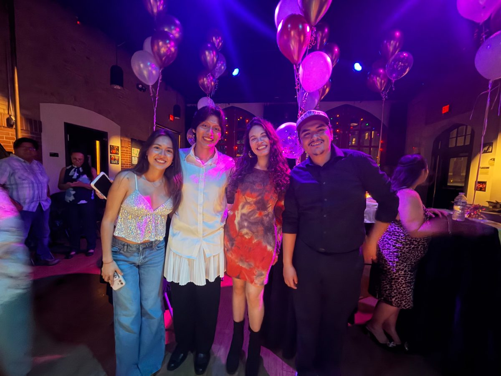
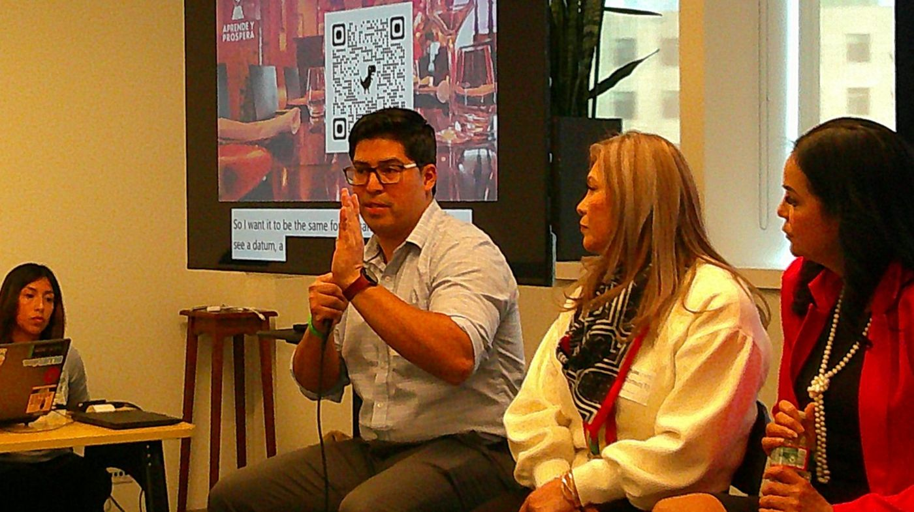
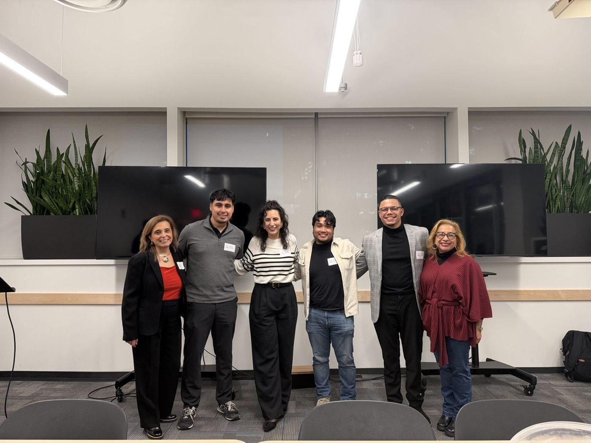

For graduates
Sign in with your account to see job offers, alumni events and professional development activities.
Sign in to the Talent BankHome Community
Graduates, faculty, volunteers, partners and donors from Latin America and the United States. Find out how to connect, learn with us and support our mission.

Sign in with your account to see job offers, alumni events and professional development activities.
Sign in to the Talent BankCompanies and organizations interested in hiring our graduates, hosting interns, proposing challenges for our specializations, mentoring, joining our Virtual Forums as panelists or sponsoring scholarships can apply to become partner organizations. AYP reviews each application and, once approved, the organization gets access to the portal to post opportunities and meet our talent.
Our graduates stay connected through social gatherings, professional development activities and opportunities to return as mentors, faculty or volunteers.
Every third Wednesday of the month, international experts in innovation, technology, business and personal development. Live on Facebook, YouTube and LinkedIn. We have held 70 forums since 2020.
Panels and workshops where innovation and technology meet different industries, at Venture Café Cambridge, livestreamed.
Global leaders share strategy, markets and transformation with new generations.
EdTech Innovation Ecosystems: Scalability Models and Strategic Partnerships in LatAm.
Register for freeThis year we met the community in person, in addition to our virtual forums.

Hispanic Heritage Month Mixer
A free, open gathering organized in collaboration by several organizations, including Latinas in Tech Boston, to celebrate Latino culture and connect with Boston's professional community.

Skills, leadership and the future of work

A Night of Music, Movement & Flavors from Across Latin America
A night of dancing, talent and flavors from Latin America. Four singers delighted us with their voices and got us dancing, along with DJ Johnny Giraldo and a beginner salsa class.




Strategies for the development and sustainability of nonprofit organizations
 Beyond the game: what does gamification really mean? (in Spanish)
Beyond the game: what does gamification really mean? (in Spanish) Forum 69: AI, from human medicine to intelligent medicine (in Spanish)
Forum 69: AI, from human medicine to intelligent medicine (in Spanish) Master Class: Generative AI as an ally in instructional design (in Spanish)
Master Class: Generative AI as an ally in instructional design (in Spanish) Master Class 1: Gaming, TikTok and climate change
Master Class 1: Gaming, TikTok and climate change



A free, semiannual digital magazine in Spanish on education, innovation, entrepreneurship and the development of Latino talent. The second issue is now available.

Send your article proposals to rcelaya@aprendeyprospera.org.
We are a community of 130 volunteers in 20 countries across Latin America and the United States. Thanks to their work, our programs can offer such a large subsidy.
Supports the organization of courses, faculty and academic calendars.
Plans and tracks institutional and academic projects.
Creates visuals for programs, events and social media.
Plans and coordinates outreach campaigns for our programs.
Drives program promotion and outreach to prospective students.
Manages our social media and communication with the community.
Organizes and maintains our databases and forms.
Writes proposals to foundations and other funders.
Designs and improves courses and materials for the Campus Virtual.
Supports faculty in live classes and in the Campus Virtual.
Guides students and entrepreneurs in their area of expertise.
Supports students from enrollment to certification.
Monitors program quality and continuous improvement.
Support students and entrepreneurs with your professional experience. Mentors guide real projects in our specializations and in Project Lab.
I want to be a mentorSupport talented students with financial limitations. Thanks to our sponsors, three students took the fourth edition of Project Management.
Would you like to sponsor a student so they can join a program? Write to us at info@aprendeyprospera.org.
I want to sponsor a studentYour donation helps young professionals access quality education and decent work. Donations to AYP Business School, a 501(c)(3) organization, are tax-deductible in the United States as allowed by law.
Donate now with PayPalDonations are processed securely through PayPal, payable to AYP Business School.